Contenido del reporte de práctica
Respaldo de PostgreSQL desde diferentes tecnologías web
El respaldo de una base de datos es una actividad importante para conservar la información y disponer de una copia que pueda utilizarse posteriormente en caso de pérdida, modificación accidental o algún problema con el sistema. En esta práctica se trabajó con una base de datos PostgreSQL alojada en Neon, utilizando diferentes tecnologías para generar respaldos desde aplicaciones web.
El objetivo de la práctica fue desarrollar aplicaciones web utilizando PHP, .NET 10, Golang, Rust, Python y C++, desde las cuales el usuario pudiera solicitar la generación de un respaldo. Para mantener un funcionamiento similar entre las diferentes implementaciones, se utilizó la herramienta pg_dump de PostgreSQL para generar los archivos de respaldo en formato SQL.
Durante el desarrollo se configuró la conexión con la base de datos, se realizaron pruebas desde la línea de comandos y posteriormente se integró el proceso de respaldo con cada una de las aplicaciones web. Finalmente, se compararon las tecnologías utilizadas considerando principalmente su facilidad de implementación y el funcionamiento obtenido durante las pruebas.
Conceptos utilizados para la generación de respaldos
PostgreSQL es un sistema gestor de bases de datos relacional de código abierto que permite almacenar, organizar y consultar información. También proporciona diferentes herramientas para realizar tareas administrativas, entre ellas la generación de respaldos de una base de datos (PostgreSQL Global Development Group, 2026).
Neon es una plataforma que proporciona bases de datos PostgreSQL en la nube. En esta práctica se utilizó para alojar la base de datos sobre la cual se realizaron las conexiones y las pruebas de respaldo desde las diferentes aplicaciones web.
Un respaldo consiste en conservar una copia de la información almacenada en una base de datos para disponer de ella en caso de pérdida de información, modificaciones accidentales o problemas con el sistema. Dependiendo del método utilizado, el respaldo puede incluir tanto la estructura de la base de datos como los datos almacenados.
pg_dump es una herramienta de PostgreSQL que permite exportar una base de datos. En esta práctica se utilizó para generar archivos en formato SQL a partir de la base de datos alojada en Neon. Estos archivos contienen la información necesaria para conservar una copia de la base de datos (PostgreSQL Global Development Group, 2026).
Para realizar la práctica se desarrollaron aplicaciones web con PHP, .NET 10, Golang, Rust, Python y C++. Aunque cada tecnología utiliza una forma diferente para crear y ejecutar una aplicación web, todas fueron utilizadas con el mismo propósito: permitir que el usuario iniciara la generación de un respaldo desde una interfaz accesible mediante el navegador.
Desarrollo y pruebas del sistema de respaldos
Primero se verificó que las herramientas de PostgreSQL estuvieran instaladas correctamente en el equipo. Se comprobó principalmente el funcionamiento de pg_dump, debido a que esta herramienta sería la encargada de generar los respaldos de la base de datos.
Posteriormente se utilizaron los datos de conexión proporcionados por Neon para establecer comunicación con la base de datos PostgreSQL alojada en la nube. También se configuró el archivo pgpass.conf para permitir la autenticación durante la ejecución de los respaldos sin solicitar manualmente la contraseña en cada operación.
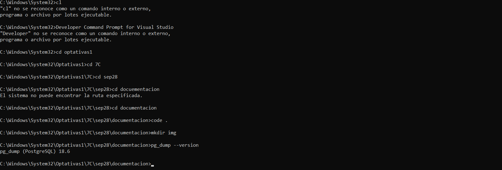
Figura 1. Verificación de las herramientas de PostgreSQL.
Antes de desarrollar las aplicaciones web se realizó una prueba directamente desde la línea de comandos. Para ello se ejecutó pg_dump indicando los datos necesarios para conectarse a la base de datos y la ubicación donde se almacenaría el archivo generado.
pg_dump -h "servidor-neon" -p 5432
-U "usuario" -d "base_de_datos"
-f "respaldo.sql"
La prueba permitió comprobar que el equipo podía conectarse correctamente con Neon y generar un archivo SQL con el contenido de la base de datos.
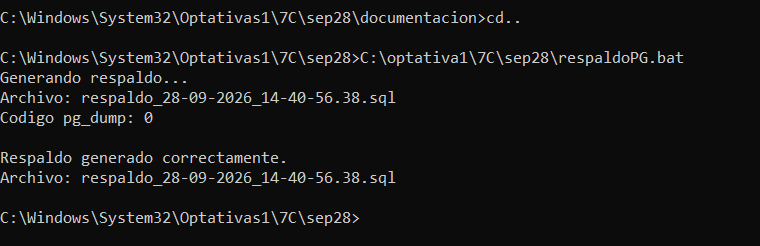
Figura 2. Generación manual del respaldo mediante pg_dump.
Una vez comprobado el funcionamiento de pg_dump, se creó un archivo por lotes denominado respaldoPG.bat. Este archivo permitió automatizar la generación del respaldo para posteriormente ejecutarlo desde las diferentes aplicaciones web.
El archivo fue configurado para generar automáticamente un nombre de respaldo utilizando la fecha y la hora de ejecución. De esta forma, cada respaldo puede almacenarse como un archivo diferente y se evita reemplazar directamente el respaldo anterior.
respaldo_28-09-2026_14-16-00.sql
Finalmente, el archivo BAT se ejecutó directamente desde la consola para comprobar su funcionamiento. Al finalizar correctamente, pg_dump devolvió el código de salida 0 y se verificó la creación del archivo SQL.
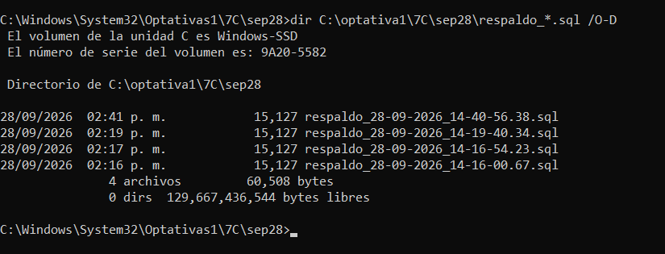
Figura 3. Ejecución correcta del proceso automatizado de respaldo.
Después de comprobar que el proceso de respaldo funcionaba correctamente, se desarrolló una aplicación web utilizando PHP. La aplicación permite que el usuario solicite la generación de un respaldo de la base de datos PostgreSQL desde una interfaz sencilla en el navegador.
Para realizar la prueba se inició el servidor local de PHP y se accedió a la aplicación mediante localhost. En la interfaz se incorporó un botón para iniciar el proceso de generación del respaldo.
php -S localhost:8000
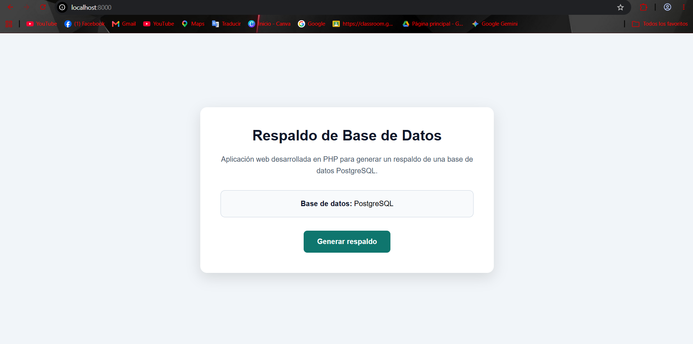
Figura 4. Interfaz de la aplicación web desarrollada en PHP para generar respaldos de PostgreSQL.
Una vez iniciada la aplicación PHP, se realizó una prueba utilizando el botón de generación de respaldo. La aplicación ejecutó el proceso configurado para crear una copia de la base de datos PostgreSQL.
Al finalizar la operación, la aplicación mostró un mensaje indicando que el respaldo se había generado correctamente, comprobando la comunicación entre la aplicación web y el proceso encargado de realizar el respaldo.
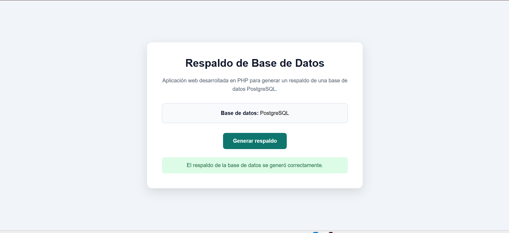
Figura 5. Generación correcta del respaldo desde la aplicación web desarrollada en PHP.
Posteriormente se desarrolló una segunda aplicación web utilizando .NET 10 y C#. Esta aplicación mantiene el mismo objetivo que la versión realizada en PHP, permitiendo iniciar el proceso de respaldo de PostgreSQL desde el navegador.
Para comprobar su funcionamiento se inició el proyecto desde la terminal y posteriormente se accedió a la dirección local indicada por el servidor. La aplicación presenta una interfaz desde la cual el usuario puede solicitar la generación del respaldo.
dotnet run
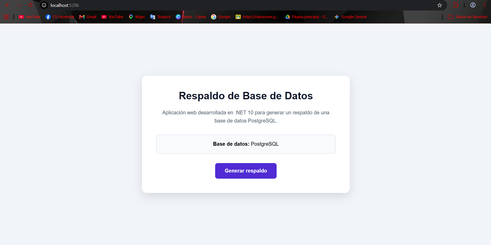
Figura 6. Interfaz de la aplicación web desarrollada con .NET 10 para generar respaldos de PostgreSQL.
Con la aplicación .NET 10 en ejecución, se realizó una prueba para generar el respaldo desde la interfaz web. Al presionar el botón correspondiente, la aplicación ejecutó el proceso encargado de crear la copia de la base de datos PostgreSQL.
Después de finalizar el proceso, la aplicación mostró el resultado de la operación, permitiendo comprobar que el respaldo podía solicitarse correctamente desde la aplicación desarrollada con C#.
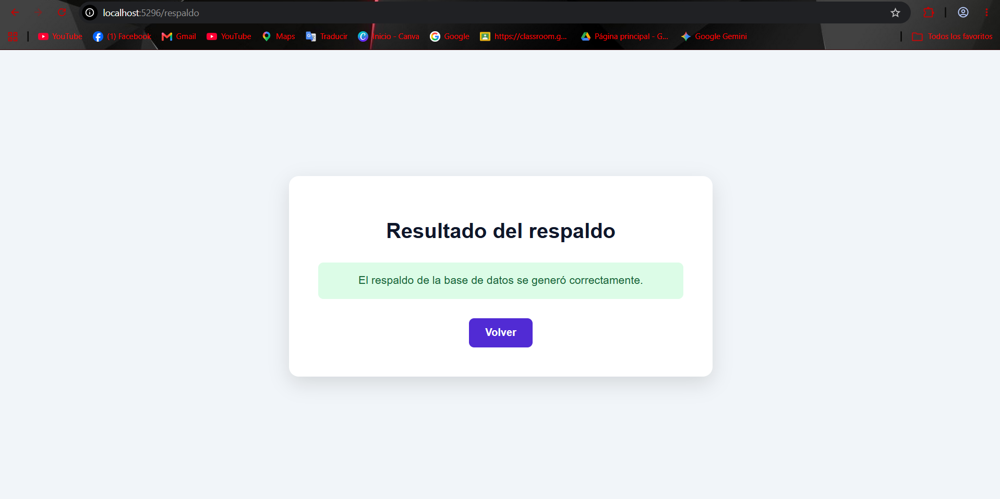
Figura 7. Generación correcta del respaldo desde la aplicación web desarrollada con .NET 10.
La siguiente aplicación se desarrolló utilizando Golang. Para esta versión se creó un servidor web local encargado de mostrar la interfaz desde la cual el usuario puede solicitar la generación del respaldo de PostgreSQL.
Durante las pruebas fue necesario trabajar con el proyecto desde una ruta diferente a System32 debido a inconvenientes con el entorno. Una vez realizado este ajuste, la aplicación pudo ejecutarse correctamente y ser consultada desde el navegador.
go run main.go
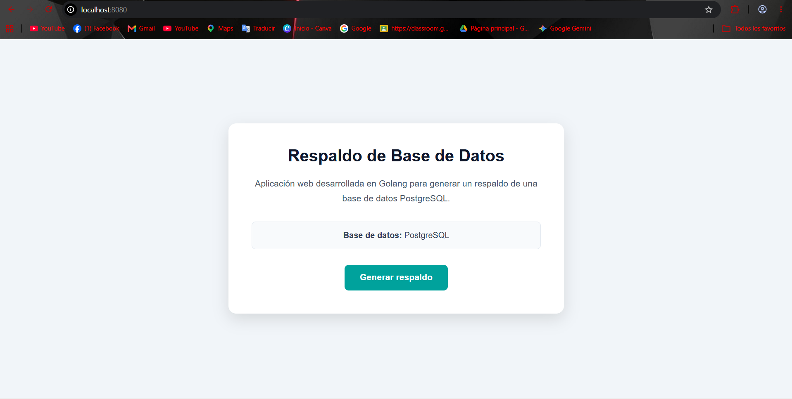
Figura 8. Interfaz de la aplicación web desarrollada con Golang para generar respaldos de PostgreSQL.
Con la aplicación desarrollada en Golang en ejecución, se realizó una prueba desde el navegador para generar el respaldo de la base de datos. Al presionar el botón correspondiente, la aplicación inició el proceso configurado para crear el archivo SQL.
Al finalizar la operación se mostró el resultado en la interfaz, permitiendo comprobar que la aplicación desarrollada en Golang podía ejecutar correctamente el proceso de respaldo.
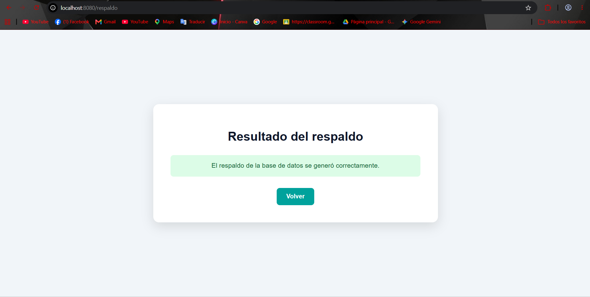
Figura 9. Generación correcta del respaldo desde la aplicación web desarrollada con Golang.
Posteriormente se desarrolló una aplicación web utilizando Rust. La aplicación fue configurada para ejecutarse mediante un servidor local y proporcionar una interfaz desde la cual el usuario puede iniciar el respaldo de la base de datos PostgreSQL.
Para ejecutar el proyecto se utilizó Cargo, herramienta empleada para administrar y ejecutar proyectos desarrollados en Rust. Una vez iniciado el servidor, se accedió a la aplicación desde el navegador para comprobar su funcionamiento.
cargo run
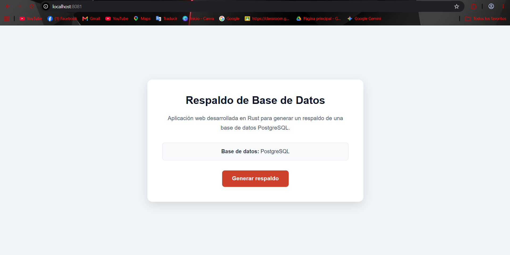
Figura 10. Interfaz de la aplicación web desarrollada con Rust para generar respaldos de PostgreSQL.
Con la aplicación desarrollada en Rust en funcionamiento, se realizó una prueba de generación del respaldo desde el navegador. Al presionar el botón correspondiente, la aplicación ejecutó el proceso encargado de crear una copia de la base de datos PostgreSQL.
Una vez finalizada la operación, la aplicación mostró el resultado del proceso, permitiendo comprobar que la solicitud de respaldo podía realizarse correctamente desde la aplicación desarrollada en Rust.
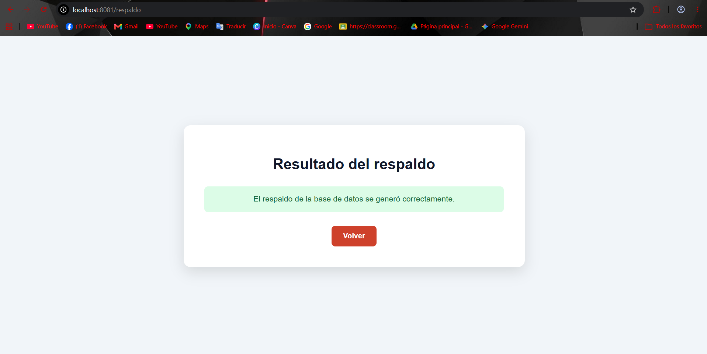
Figura 11. Generación correcta del respaldo desde la aplicación web desarrollada con Rust.
La siguiente aplicación web se desarrolló utilizando Python. Esta versión permite acceder desde el navegador a una interfaz sencilla para solicitar la generación del respaldo de la base de datos PostgreSQL.
Para realizar las pruebas se inició el servidor de la aplicación desde la terminal. Una vez ejecutado, se accedió a la dirección local proporcionada por el servidor para comprobar que la interfaz funcionara correctamente.
py app.py
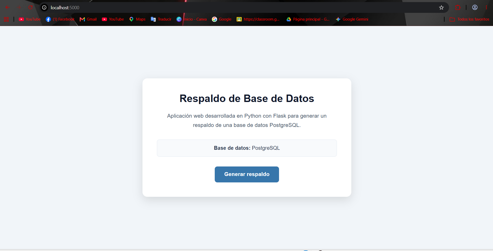
Figura 12. Interfaz de la aplicación web desarrollada con Python para generar respaldos de PostgreSQL.
Con la aplicación desarrollada en Python en ejecución, se realizó una prueba para generar el respaldo desde el navegador. Al presionar el botón correspondiente, la aplicación inició el proceso encargado de crear la copia de la base de datos PostgreSQL.
Al finalizar la operación, la interfaz mostró un mensaje indicando que el respaldo se había generado correctamente. Con esta prueba se comprobó el funcionamiento de la aplicación y su integración con el proceso de respaldo.
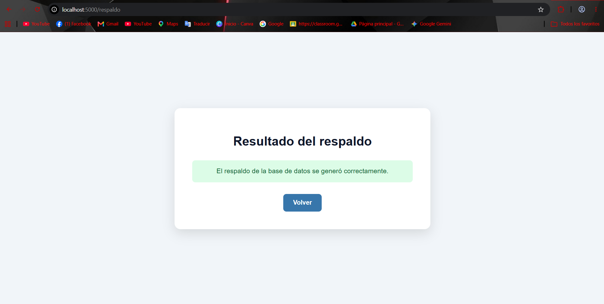
Figura 13. Generación correcta del respaldo desde la aplicación web desarrollada con Python.
Finalmente, se desarrolló una aplicación web utilizando C++ y el framework Drogon. Esta aplicación permite acceder desde el navegador a una interfaz para solicitar la generación del respaldo de la base de datos PostgreSQL.
Para esta implementación fue necesario compilar previamente el proyecto y sus dependencias. Una vez generado el ejecutable, se inició el servidor web y se comprobó el acceso a la aplicación mediante una dirección local.
C:\optativa1\7C\sep28\cpp\build\Release\RespaldoWeb.exe
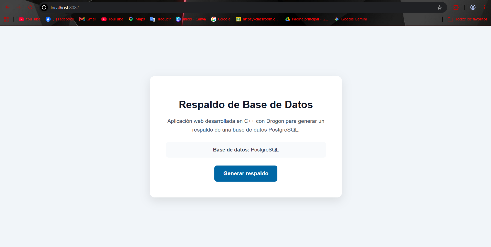
Figura 14. Interfaz de la aplicación web desarrollada con C++ y Drogon para generar respaldos de PostgreSQL.
Con la aplicación desarrollada en C++ y Drogon en ejecución, se realizó la prueba final de generación del respaldo. Desde la interfaz web se solicitó la creación de una copia de la base de datos PostgreSQL alojada en Neon.
Al ejecutar la operación, la aplicación inició el proceso de respaldo y posteriormente mostró el resultado obtenido. Con esta prueba se comprobó que la aplicación desarrollada en C++ también podía ejecutar correctamente la generación del archivo de respaldo.
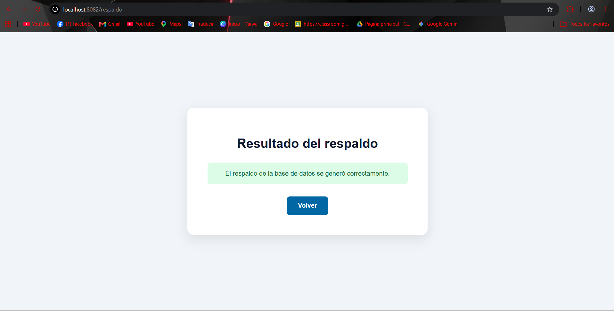
Figura 15. Generación correcta del respaldo desde la aplicación web desarrollada con C++ y Drogon.
Comparación de facilidad y rendimiento
Después de implementar y probar las seis aplicaciones web, se realizó una comparación general considerando la facilidad de implementación y el rendimiento observado durante la práctica. Debido a que todas las aplicaciones utilizan el mismo proceso de respaldo mediante pg_dump, no se realizaron mediciones exactas de tiempo entre los diferentes lenguajes.
| Tecnología | Facilidad | Rendimiento observado | Observaciones |
|---|---|---|---|
| PHP | Alta | Adecuado | Requirió poca configuración y permitió ejecutar el proceso de respaldo de manera sencilla. |
| .NET 10 | Alta | Adecuado | Permitió integrar fácilmente la aplicación web con la ejecución del proceso externo. |
| Golang | Media | Adecuado | La implementación fue sencilla después de solucionar algunos inconvenientes relacionados con el entorno y las rutas. |
| Rust | Media | Adecuado | Requirió preparar el proyecto y sus dependencias antes de ejecutar correctamente la aplicación. |
| Python | Alta | Adecuado | Permitió desarrollar y ejecutar la aplicación web con una configuración relativamente sencilla. |
| C++ / Drogon | Baja | Adecuado | Requirió mayor configuración debido al compilador, CMake, vcpkg, Drogon y sus dependencias. |
En general, las seis tecnologías permitieron cumplir con el objetivo de generar el respaldo. Las principales diferencias se encontraron en la facilidad de preparación del entorno y desarrollo de cada aplicación. En cuanto al rendimiento, durante las pruebas todas respondieron adecuadamente; sin embargo, no se realizaron mediciones controladas que permitan establecer una diferencia exacta de velocidad entre ellas.
Resultados obtenidos durante la práctica
Durante esta práctica se logró implementar un proceso de respaldo para una base de datos PostgreSQL alojada en Neon y utilizarlo desde diferentes aplicaciones web. Para ello se trabajó con pg_dump y posteriormente se automatizó su ejecución para facilitar la generación de los archivos SQL.
También se comprobó que PHP, .NET 10, Golang, Rust, Python y C++ pueden utilizarse para desarrollar una interfaz web capaz de iniciar el mismo proceso de respaldo. Aunque el resultado fue similar en todas las aplicaciones, la preparación del entorno presentó diferentes niveles de dificultad. Algunos lenguajes permitieron realizar la implementación con poca configuración, mientras que otros requirieron instalar y configurar herramientas adicionales.
Finalmente, los problemas encontrados durante las pruebas permitieron comprender la importancia de verificar las rutas, dependencias, arquitecturas y herramientas utilizadas por cada proyecto. Después de realizar los ajustes necesarios, las seis aplicaciones lograron ejecutar correctamente el proceso de respaldo, cumpliendo con el objetivo planteado para la práctica.
Fuentes consultadas para el desarrollo de la práctica
Go Authors. (2026). Package net/http. Go Packages. https://pkg.go.dev/net/http
Microsoft. (2026). ASP.NET Core documentation. Microsoft Learn. https://learn.microsoft.com/aspnet/core/
Neon. (s. f.). Neon documentation. https://neon.com/docs
PHP Documentation Group. (s. f.). exec — Ejecuta un programa externo. Manual de PHP. https://www.php.net/manual/es/function.exec.php
PostgreSQL Global Development Group. (2026). pg_dump. PostgreSQL 18 Documentation. https://www.postgresql.org/docs/18/app-pgdump.html
Python Software Foundation. (2026). Python documentation. https://docs.python.org/3/
Rust Project Developers. (2026). The Cargo Book. Rust Documentation. https://doc.rust-lang.org/cargo/
Drogon Framework. (s. f.). Drogon: C++ web application framework. https://drogon.org/